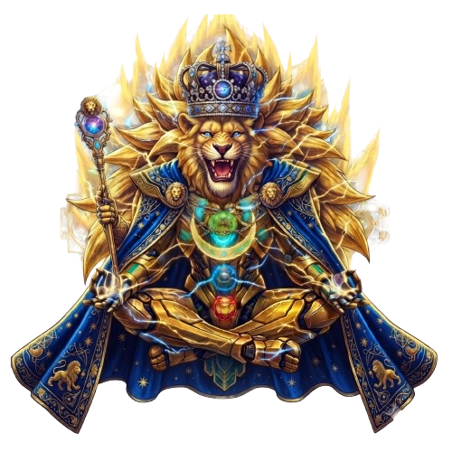

<!-- PANEL AVATAR 3D PARALLAX -->
<div class="panel-container avatar-panel">
    <div class="panel-header">
        <span class="panel-title">// AVATAR</span>
        <span class="panel-subtitle">Wakamono</span>
    </div>
    
    <div class="panel-body avatar-scene-container" id="avatarScene">
        <div class="avatar-stage" id="avatarStage">
            <!-- Capa 1: Fondo de meditación -->
            

            <!-- Capa 2: Rocas flotantes (Efecto intermedio) -->
            

            <!-- Capa 3: León Meditando (Capa frontal) -->
            
        </div>
    </div>
</div>